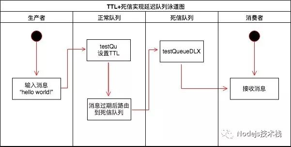
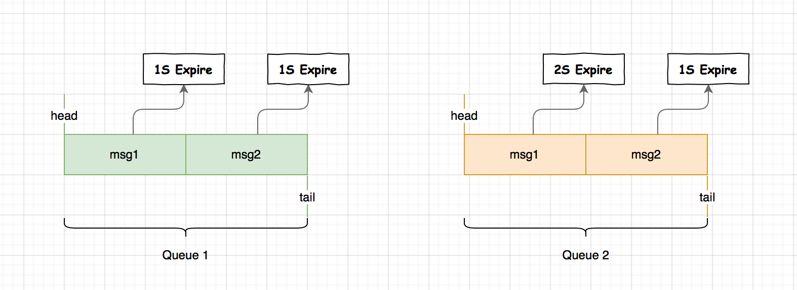
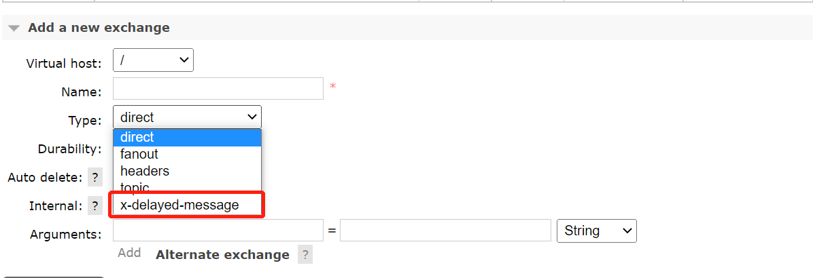
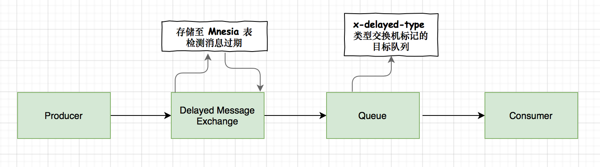

RabbitMQ延迟队列
【MQ中间件】RabbitMQ延迟队列
什么是延时队列
延时队列，首先，它是一种队列，队列意味着内部的元素是有序的，元素出队和入队是有方向性的，元素从一端进入，从另一端取出。
其次，延时队列最重要的特性就体现在它的延时属性上，跟普通的队列不一样的是，普通队列中的元素总是等着希望被早点取出处理，而延时队列中的元素则是希望被在指定时间得到取出和处理，所以延时队列中的元素是都是带时间属性的。
简单来说，延时队列就是用来存放需要在指定时间被处理的元素的队列。
延时队列使用场景
那么什么时候需要用延时队列呢？考虑一下以下场景：
- 订单在十分钟之内未支付则自动取消。
- 新创建的店铺，如果在十天内都没有上传过商品，则自动发送消息提醒。
- 账单在一周内未支付，则自动结算。
- 用户注册成功后，如果三天内没有登陆则进行短信提醒。
- 用户发起退款，如果三天内没有得到处理则通知相关运营人员。
- 预定会议后，需要在预定的时间点前十分钟通知各个与会人员参加会议。
对于少量数据，我们可以使用定时任务来完成相应的需求。
但对于数据量比较大，并且时效性较强的场景，如：“订单十分钟内未支付则关闭“，短期内未支付的订单数据可能会有很多，活动期间甚至会达到百万甚至千万级别，对这么庞大的数据量仍旧使用轮询的方式显然是不可取的，很可能单位时间内无法完成所有订单的检查，同时会给数据库带来很大压力，无法满足业务要求而且性能低下。
这时候，延时队列就可以闪亮登场了，以上场景，正是延时队列的用武之地。
RabbitMQ中的TTL
TTL是RabbitMQ中一个消息或者队列的属性，表明一条消息或者该队列中的所有消息的最大存活时间，单位是毫秒。
换句话说，如果一条消息设置了TTL属性或者进入了设置TTL属性的队列，那么这条消息如果在TTL设置的时间内没有被消费，则会成为“死信”（至于什么是死信，请翻看上一篇）。如果同时配置了队列的TTL和消息的TTL，那么较小的那个值将会被使用。
那么，如何设置这个TTL值呢？有两种方式，第一种是在创建队列的时候设置队列的“x-message-ttl”属性，如下：
Map<String, Object> args = new HashMap<String, Object>();
args.put("x-message-ttl", 6000);
channel.queueDeclare(queueName, durable, exclusive, autoDelete, args);这样所有被投递到该队列的消息都最多不会存活超过6s。
另一种方式便是针对每条消息设置TTL，代码如下：
AMQP.BasicProperties.Builder builder = new AMQP.BasicProperties.Builder();
builder.expiration("6000");
AMQP.BasicProperties properties = builder.build();
channel.basicPublish(exchangeName, routingKey, mandatory, properties, "msg body".getBytes());这样这条消息的过期时间也被设置成了6s。
但这两种方式是有区别的，如果设置了队列的TTL属性，那么一旦消息过期，就会被队列丢弃，而第二种方式，消息即使过期，也不一定会被马上丢弃，因为消息是否过期是在即将投递到消费者之前判定的，如果当前队列有严重的消息积压情况，则已过期的消息也许还能存活较长时间。
另外，还需要注意的一点是，如果不设置TTL，表示消息永远不会过期，如果将TTL设置为0，则表示除非此时可以直接投递该消息到消费者，否则该消息将会被丢弃。
如何利用RabbitMQ实现延时队列
RabbitMQ 本身是不支持的，可以通过它提供的两个特性 Time-To-Live and Expiration、Dead Letter Exchanges 来实现，通过以下泳道图可以看到一个消息从发布到消费的整个过程。

延时队列，不就是想要消息延迟多久被处理吗，TTL则刚好能让消息在延迟多久之后成为死信，另一方面，成为死信的消息都会被投递到死信队列里，这样只需要消费者一直消费死信队列里的消息就万事大吉了，因为里面的消息都是希望被立即处理的消息。

生产者生产一条延时消息，根据需要延时时间的不同，利用不同的routingkey将消息路由到不同的延时队列，每个队列都设置了不同的TTL属性，并绑定在同一个死信交换机中，消息过期后，根据routingkey的不同，又会被路由到不同的死信队列中，消费者只需要监听对应的死信队列进行处理即可。
相关代码：
先声明交换机、队列以及他们的绑定关系：
@Configuration
public class RabbitMQConfig {
public static final String DELAY_EXCHANGE_NAME = "delay.queue.demo.business.exchange";
public static final String DELAY_QUEUEA_NAME = "delay.queue.demo.business.queuea";
public static final String DELAY_QUEUEB_NAME = "delay.queue.demo.business.queueb";
public static final String DELAY_QUEUEA_ROUTING_KEY = "delay.queue.demo.business.queuea.routingkey";
public static final String DELAY_QUEUEB_ROUTING_KEY = "delay.queue.demo.business.queueb.routingkey";
public static final String DEAD_LETTER_EXCHANGE = "delay.queue.demo.deadletter.exchange";
public static final String DEAD_LETTER_QUEUEA_ROUTING_KEY = "delay.queue.demo.deadletter.delay_10s.routingkey";
public static final String DEAD_LETTER_QUEUEB_ROUTING_KEY = "delay.queue.demo.deadletter.delay_60s.routingkey";
public static final String DEAD_LETTER_QUEUEA_NAME = "delay.queue.demo.deadletter.queuea";
public static final String DEAD_LETTER_QUEUEB_NAME = "delay.queue.demo.deadletter.queueb";
// 声明延时Exchange
@Bean("delayExchange")
public DirectExchange delayExchange(){
return new DirectExchange(DELAY_EXCHANGE_NAME);
}
// 声明死信Exchange
@Bean("deadLetterExchange")
public DirectExchange deadLetterExchange(){
return new DirectExchange(DEAD_LETTER_EXCHANGE);
}
// 声明延时队列A 延时10s
// 并绑定到对应的死信交换机
@Bean("delayQueueA")
public Queue delayQueueA(){
Map<String, Object> args = new HashMap<>(2);
// x-dead-letter-exchange 这里声明当前队列绑定的死信交换机
args.put("x-dead-letter-exchange", DEAD_LETTER_EXCHANGE);
// x-dead-letter-routing-key 这里声明当前队列的死信路由key
args.put("x-dead-letter-routing-key", DEAD_LETTER_QUEUEA_ROUTING_KEY);
// x-message-ttl 声明队列的TTL
args.put("x-message-ttl", 6000);
return QueueBuilder.durable(DELAY_QUEUEA_NAME).withArguments(args).build();
}
// 声明延时队列B 延时 60s
// 并绑定到对应的死信交换机
@Bean("delayQueueB")
public Queue delayQueueB(){
Map<String, Object> args = new HashMap<>(2);
// x-dead-letter-exchange 这里声明当前队列绑定的死信交换机
args.put("x-dead-letter-exchange", DEAD_LETTER_EXCHANGE);
// x-dead-letter-routing-key 这里声明当前队列的死信路由key
args.put("x-dead-letter-routing-key", DEAD_LETTER_QUEUEB_ROUTING_KEY);
// x-message-ttl 声明队列的TTL
args.put("x-message-ttl", 60000);
return QueueBuilder.durable(DELAY_QUEUEB_NAME).withArguments(args).build();
}
// 声明死信队列A 用于接收延时10s处理的消息
@Bean("deadLetterQueueA")
public Queue deadLetterQueueA(){
return new Queue(DEAD_LETTER_QUEUEA_NAME);
}
// 声明死信队列B 用于接收延时60s处理的消息
@Bean("deadLetterQueueB")
public Queue deadLetterQueueB(){
return new Queue(DEAD_LETTER_QUEUEB_NAME);
}
// 声明延时队列A绑定关系
@Bean
public Binding delayBindingA(@Qualifier("delayQueueA") Queue queue,
@Qualifier("delayExchange") DirectExchange exchange){
return BindingBuilder.bind(queue).to(exchange).with(DELAY_QUEUEA_ROUTING_KEY);
}
// 声明业务队列B绑定关系
@Bean
public Binding delayBindingB(@Qualifier("delayQueueB") Queue queue,
@Qualifier("delayExchange") DirectExchange exchange){
return BindingBuilder.bind(queue).to(exchange).with(DELAY_QUEUEB_ROUTING_KEY);
}
// 声明死信队列A绑定关系
@Bean
public Binding deadLetterBindingA(@Qualifier("deadLetterQueueA") Queue queue,
@Qualifier("deadLetterExchange") DirectExchange exchange){
return BindingBuilder.bind(queue).to(exchange).with(DEAD_LETTER_QUEUEA_ROUTING_KEY);
}
// 声明死信队列B绑定关系
@Bean
public Binding deadLetterBindingB(@Qualifier("deadLetterQueueB") Queue queue,
@Qualifier("deadLetterExchange") DirectExchange exchange){
return BindingBuilder.bind(queue).to(exchange).with(DEAD_LETTER_QUEUEB_ROUTING_KEY);
}
}接下来，创建两个消费者，分别对两个死信队列的消息进行消费：
@Slf4j
@Component
public class DeadLetterQueueConsumer {
@RabbitListener(queues = DEAD_LETTER_QUEUEA_NAME)
public void receiveA(Message message, Channel channel) throws IOException {
String msg = new String(message.getBody());
log.info("当前时间：{},死信队列A收到消息：{}", new Date().toString(), msg);
channel.basicAck(message.getMessageProperties().getDeliveryTag(), false);
}
@RabbitListener(queues = DEAD_LETTER_QUEUEB_NAME)
public void receiveB(Message message, Channel channel) throws IOException {
String msg = new String(message.getBody());
log.info("当前时间：{},死信队列B收到消息：{}", new Date().toString(), msg);
channel.basicAck(message.getMessageProperties().getDeliveryTag(), false);
}
}发送消息
@Override
public void sendDelayMessage(String msg, String type) {
if ("delay10".equals(type)) {
rabbitTemplate.convertAndSend(DELAY_EXCHANGE_NAME, DELAY_QUEUEA_ROUTING_KEY, msg);
return;
}
rabbitTemplate.convertAndSend(DELAY_EXCHANGE_NAME, DELAY_QUEUEB_ROUTING_KEY, msg);
}发送测试消息
http://localhost:8080/rabbitmq/sendmsg?msg=testMsg1&type=delay10
http://localhost:8080/rabbitmq/sendmsg?msg=testMsg2&type=delay60第一条消息在6s后变成了死信消息，然后被消费者消费掉，第二条消息在60s之后变成了死信消息，然后被消费掉，这样，一个还算ok的延时队列就打造完成了。
不过，等等，如果这样使用的话，岂不是每增加一个新的时间需求，就要新增一个队列，这里只有6s和60s两个时间选项，如果需要一个小时后处理，那么就需要增加TTL为一个小时的队列，如果是预定会议室然后提前通知这样的场景，岂不是要增加无数个队列才能满足需求？？
DLX + TTL 方式存在的时序问题
对于延迟队列不管是 AMQP 协议或者 RabbitMQ 本身是不支持的，使用 RabbitMQ 死信队列（DLX） + TTL 的方式来模拟实现延迟队列是通常的一种做法。

左侧队列 queue1 分别两条消息 msg1、msg2 过期时间都为 1s，输出顺序为 msg1、msg2 是没问题的
右侧队列 queue2 分别两条消息 msg1、msg2 注意问题来了，msg2 的消息过期时间为 1S 而 msg1 的消息过期为 2S，因为这是在同一个队列，必须前一个消费，第二个才能消费，所以就出现了时序问题。
如果你的消息过期时间是有规律的，例如，有的 1S、有的 2S，那么我们可以以时间为维度设计为两个队列。如果此时消息的过期时间不确定或者消息过期时间维度过多，在消费端我们就要去监听多个消息队列且对于消息过期时间不确定的也是很难去设计的。
RabbitMQ延时队列优化
利用RabbitMQ插件实现延迟队列
插件安装
rabbitmq和延时插件的版本必须匹配
// 查看rabbitmq版本号
root@myrabbit:/opt/rabbitmq/plugins# rabbitmqctl version
3.9.11
// 进入插件目录
root@myrabbit:/opt/rabbitmq/plugins# cd /opt/rabbitmq/plugins
// 下载插件
wget https://github.com/rabbitmq/rabbitmq-delayed-message-exchange/releases/download/3.9.0/rabbitmq_delayed_message_exchange-3.9.0.ez
// 安装
root@myrabbit:/opt/rabbitmq/plugins# rabbitmq-plugins enable rabbitmq_delayed_message_exchange
Enabling plugins on node rabbit@myrabbit:
rabbitmq_delayed_message_exchange
The following plugins have been configured:
rabbitmq_delayed_message_exchange
rabbitmq_management
rabbitmq_management_agent
rabbitmq_mqtt
rabbitmq_prometheus
rabbitmq_web_dispatch
Applying plugin configuration to rabbit@myrabbit...
The following plugins have been enabled:
rabbitmq_delayed_message_exchange
started 1 plugins.
root@myrabbit:/opt/rabbitmq/plugins#
// 查看插件
root@myrabbit:/opt/rabbitmq/plugins# rabbitmq-plugins list
Listing plugins with pattern ".*" ...
Configured: E = explicitly enabled; e = implicitly enabled
| Status: * = running on rabbit@myrabbit
|/
[ ] rabbitmq_amqp1_0 3.9.11
[ ] rabbitmq_auth_backend_cache 3.9.11
[ ] rabbitmq_auth_backend_http 3.9.11
[ ] rabbitmq_auth_backend_ldap 3.9.11
[ ] rabbitmq_auth_backend_oauth2 3.9.11
[ ] rabbitmq_auth_mechanism_ssl 3.9.11
[ ] rabbitmq_consistent_hash_exchange 3.9.11
[E*] rabbitmq_delayed_message_exchange 3.9.0重启容器

实现原理

消息在发布之后不会立即进入队列，先将消息保存至 Mnesia。这个插件将会尝试确认消息是否过期，首先要确保消息的延迟范围是 Delay > 0, Delay =< ERL_MAX_T（在 Erlang 中可以被设置的范围为 (2^32)-1 毫秒），如果消息过期通过 x-delayed-type 类型标记的交换机投递至目标队列，整个消息的投递过程也就完成了。
实例
如果不能实现在消息粒度上添加TTL，并使其在设置的TTL时间及时死亡，就无法设计成一个通用的延时队列。
@Configuration
public class DelayedRabbitMQConfig {
public static final String DELAYED_QUEUE_NAME = "delay.queue.demo.delay.queue";
public static final String DELAYED_EXCHANGE_NAME = "delay.queue.demo.delay.exchange";
public static final String DELAYED_ROUTING_KEY = "delay.queue.demo.delay.routingkey";
@Bean
public Queue immediateQueue() {
return new Queue(DELAYED_QUEUE_NAME);
}
@Bean
public CustomExchange customExchange() {
Map<String, Object> args = new HashMap<>();
args.put("x-delayed-type", "direct");
return new CustomExchange(DELAYED_EXCHANGE_NAME, "x-delayed-message", true, false, args);
}
@Bean
public Binding bindingNotify(@Qualifier("immediateQueue") Queue queue,
@Qualifier("customExchange") CustomExchange customExchange) {
return BindingBuilder.bind(queue).to(customExchange).with(DELAYED_ROUTING_KEY).noargs();
}
}controller层再添加一个入口：
@GetMapping("/sendDelayLetterMessage")
public String sendDelayLetterMessage(String msg, Integer delayTime) {
rabbitMQService.sendDelayLetterMessage(msg, delayTime);
return "ok";
}消息发送者ServiceImpl实现类：
@Override
public void sendDelayLetterMessage(String msg, Integer delayTime) {
rabbitTemplate.convertAndSend(DELAYED_EXCHANGE_NAME, DELAYED_ROUTING_KEY, msg, a ->{
a.getMessageProperties().setDelay(delayTime);
return a;
});
}消息接收者
@Slf4j
@Component
public class DelayMessageReceiver {
@RabbitListener(queues = DELAYED_QUEUE_NAME)
public void receiveD(Message message, Channel channel) throws IOException {
String msg = new String(message.getBody());
log.info("当前时间：{},延时队列收到消息：{}", new Date().toString(), msg);
channel.basicAck(message.getMessageProperties().getDeliveryTag(), false);
}
}请求连接：
http://localhost:8080//system/rabbitmq//sendDelayLetterMessage?msg=delay20000&delayTime=20000
http://localhost:8080//system/rabbitmq//sendDelayLetterMessage?msg=delay2000&delayTime=2000相关日志打印：
[TRACEID:0ef19c49ad984cc5b5730df0a55c7523] 2022-11-27 00:58:16.403 [http-nio-8080-exec-11-67] INFO com.wql.aspect.WebLogAspect 67 doAfterReturning - WebLogAspect.doAfterReturning()
[TRACEID:] 2022-11-27 00:58:18.410 [org.springframework.amqp.rabbit.RabbitListenerEndpointContainer#4-1-26] INFO c.wql.consumer.DelayMessageReceiver 26 receiveD - 当前时间：Sun Nov 27 00:58:18 CST 2022,延时队列收到消息：delay2000
[TRACEID:] 2022-11-27 00:58:35.005 [org.springframework.amqp.rabbit.RabbitListenerEndpointContainer#4-1-26] INFO c.wql.consumer.DelayMessageReceiver 26 receiveD - 当前时间：Sun Nov 27 00:58:35 CST 2022,延时队列收到消息：delay20000
第二个消息被先消费掉了，符合预期。
局限性
Delayed Message 插件实现 RabbitMQ 延迟队列这种方式也不完全是一个银弹，它将延迟消息存在于 Mnesia 表中，并且在当前节点上具有单个磁盘副本，它们将在节点重启之后幸存(也就是说不支持集群部署)。
目前该插件的当前设计并不真正适合包含大量延迟消息（例如数十万或数百万）的场景，详情参见 #/issues/72 另外该插件的一个可变性来源是依赖于 Erlang 计时器，在系统中使用了一定数量的长时间计时器之后，它们开始争用调度程序资源，并且时间漂移不断累积。
插件的禁用要慎重，以下方式可以实现将插件禁用，但是注意如果此时还有延迟消息未消费，那么禁掉此插件后所有的未消费的延迟消息将丢失。
rabbitmq-plugins disable rabbitmq_delayed_message_exchange如果你采用了 Delayed Message 插件这种方式来实现，对于消息可用性要求较高的，在发消息之前可以先落入 DB 打标记，消费之后将消息标记为已消费，中间可以加入定时任务做检测，这可以进一步保证你的消息的可靠性。
引用